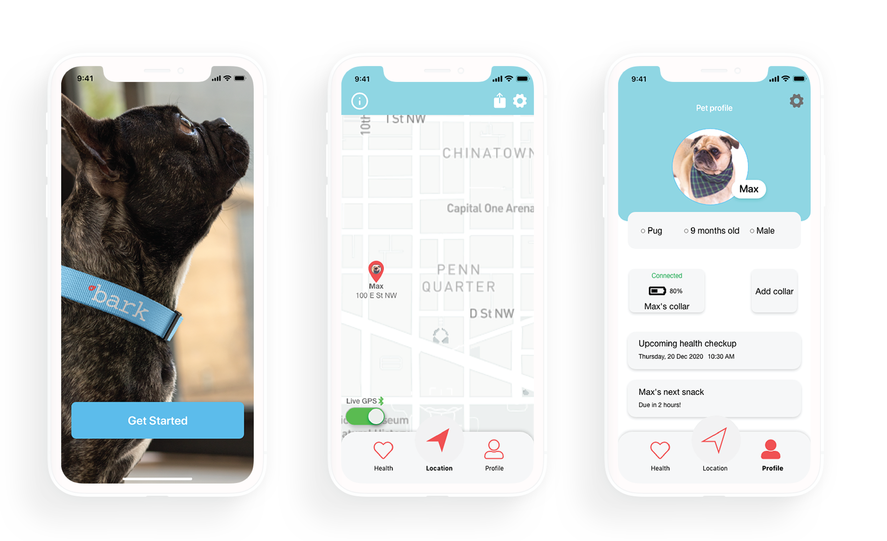
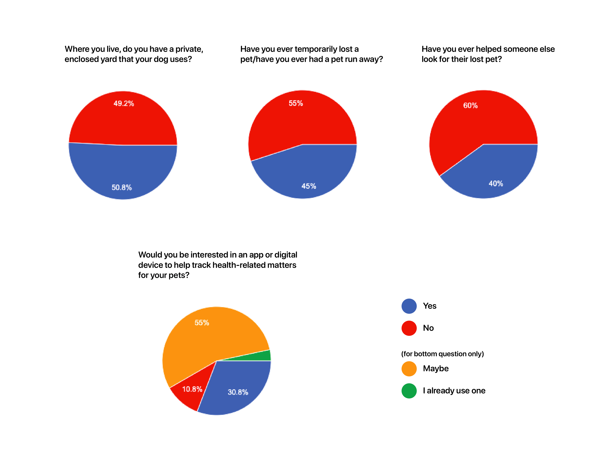
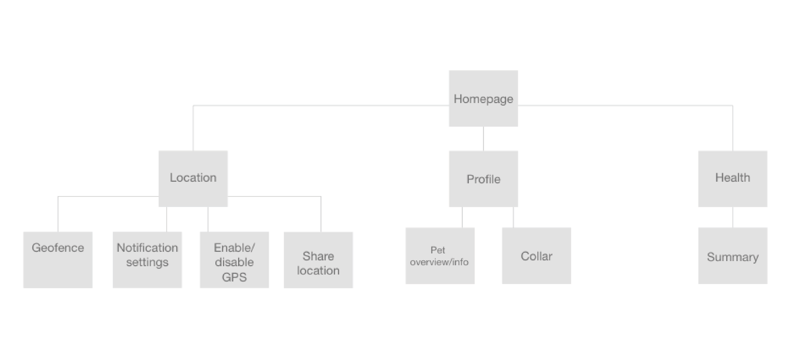
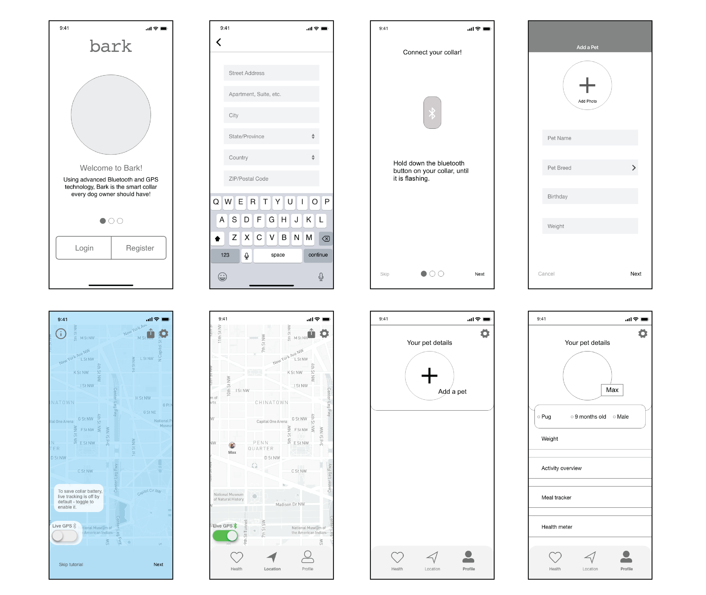
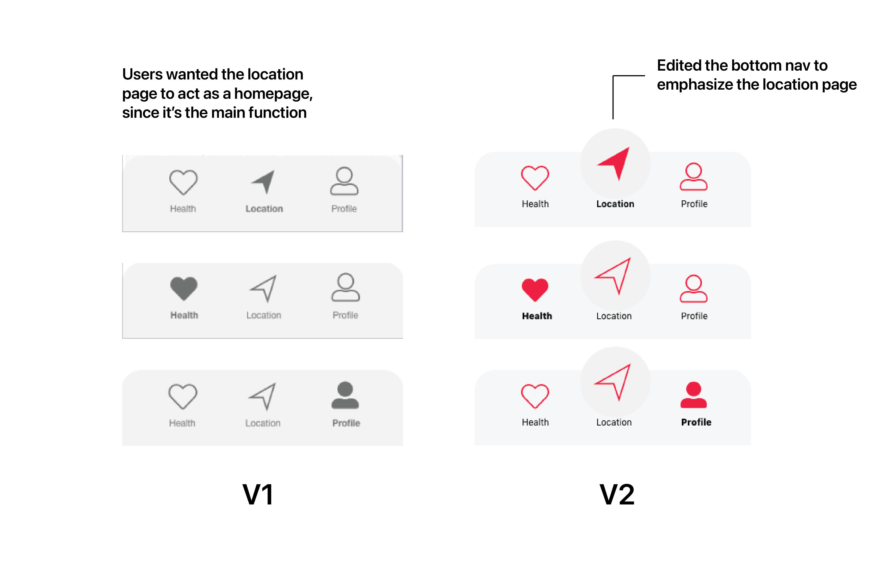
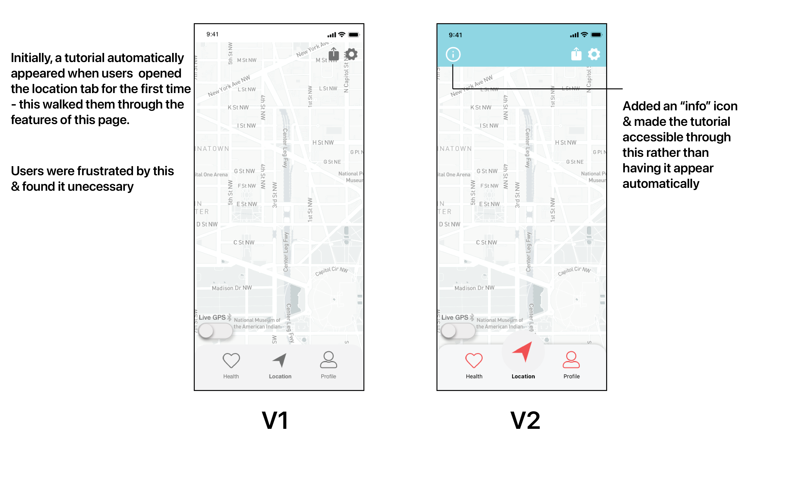
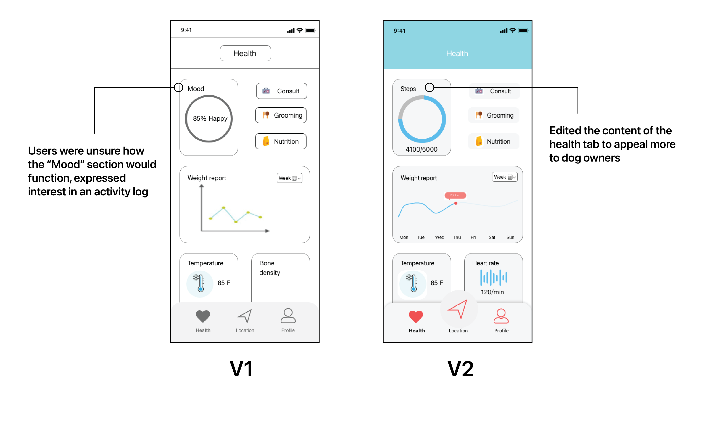
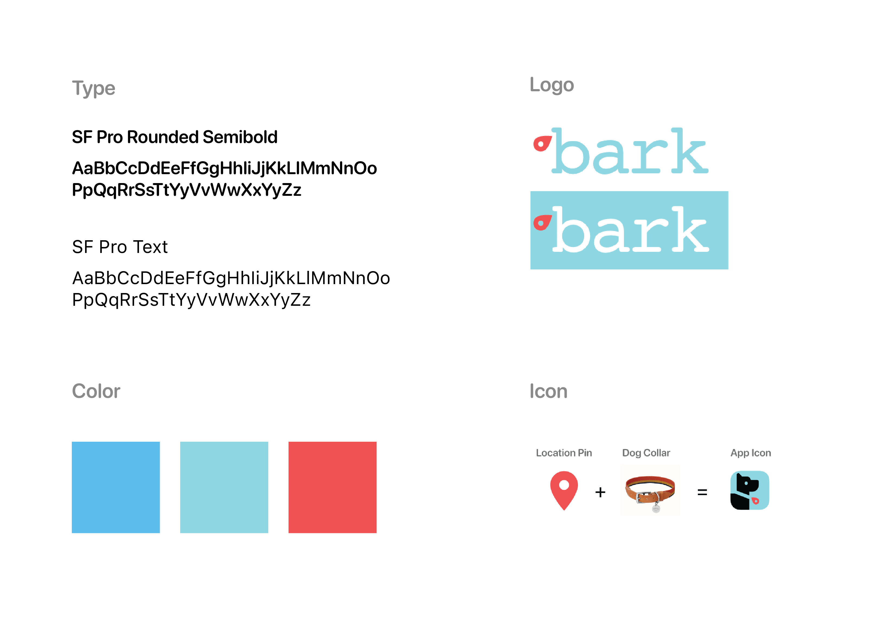
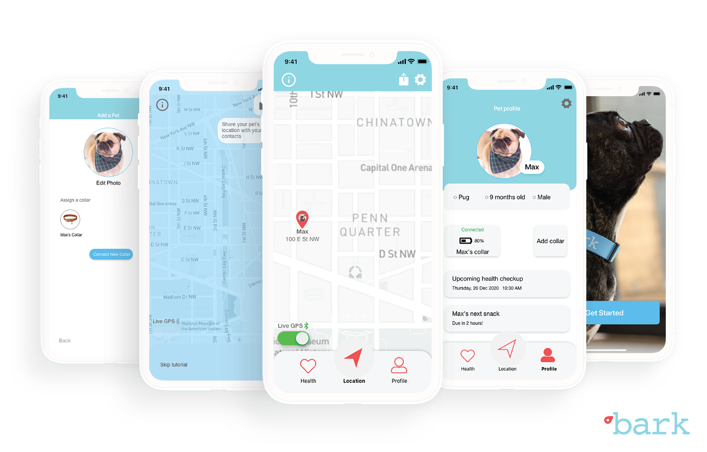

OVERVIEW
This project was a submission to the UX Result hackathon. My team and I took on a challenge sponsered by Leverege focused on creating an app to accompany a smart dog collar. View the challenge prompt here.
Timeline
2 days ~ Dec '20
Tools
Adobe XD, Photoshop, Miro
Team
3 UX designers
GOALS
The theme of the Hackathon was onboarding, so the main goal of this challenge was to design the onboarding process for the smart collar app. Later on, after conducting research, we set additional goals based on features that users need.
OUTCOME
The final outcome of this project was a working prototype of the smart collar app, Bark, which provides location and health-tracking services.

RESEARCH
Users
Our first step was to talk to dog owners to better understand their wants and needs in this product. In order to get as much feedback as possible within our time constraints, we sent out a survey that got over 100 responses. We also conducted 4 user interviews. Key findings are below.

Based on the findings we established the additional goals of
- Enabling the sharing of a pet's location, since many users have been helped by/have helped others
when looking for a lost pet
- Creating a health page (to track analytics like a Fitbit for dogs), since many users don't formally
track their pets' health but are interested in this
Competitors
Looking at existing products that function similarly, we noted things that did and didn't work well to give us design inspiration + identify areas where current products are lacking. You can see our comments on this Miro board.
DESIGN
Sitemap
Once we had an idea of the features to add to the app, we crafted a preliminary sitemap to visualize the high-level architecture and navigation.

Initial wireframes
After planning out the features we wanted in Bark, we sketched out low-fidelity screens.

Usability testing + findings
Six usability tests were conducted with the initial prototype. Below are a few insights that led to design changes.



Visual identity
After working out usability, we shifted focus to the visual style of Bark. We used blue + red as our main colors to combine a sense of security + calmness with a sense of alertness. The font “Courier” felt like a callback to type on a typical dog tag so it was used in the logo.

FINAL PRODUCT

Registration
The main goal of this project was to create Bark's onboarding experience. Starting the user flow off are some screens highlighting the app’s features. New users then proceed to register by entering information before entering the app.

Bluetooth connection
As part of the app’s onboarding, after registering, users are walked through instructions on how to connect the Bark collar to the
app via bluetooth.
This onboarding portion can also be skipped if the user wants, as there are other ways to
connect the collar once in the app.

Location tutorial
Since survey results showed that few dog owners have used dog tracking apps before, it’s important to orient users with this technology. This tutorial, which users can navigate to via the info icon, shows how to use the location services and what features are offered.

Pet profile
Users can set up a profile for their pet once inside the app. Here they can connect a collar to track location and, because of the interest we gathered during user research, track health-related matters.

See another project: